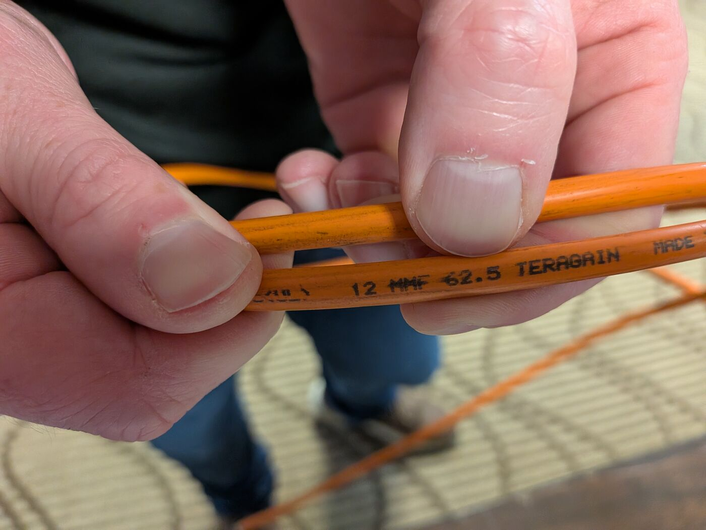
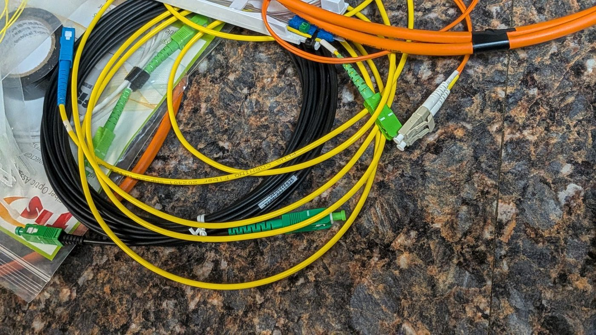
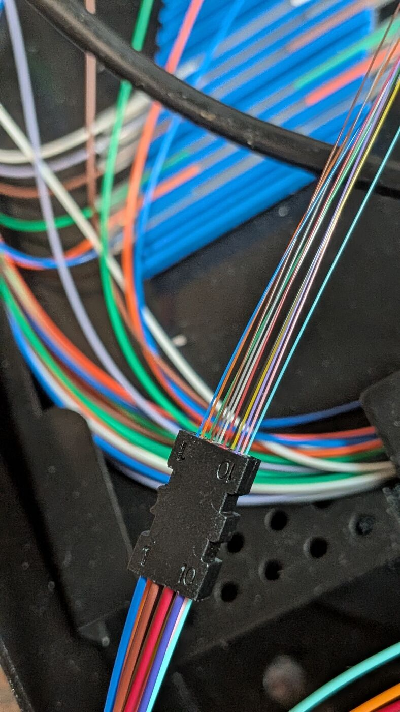
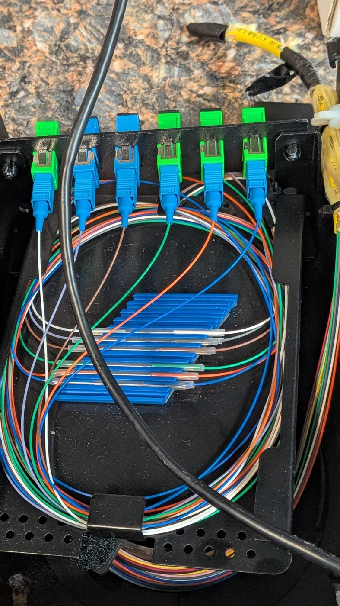
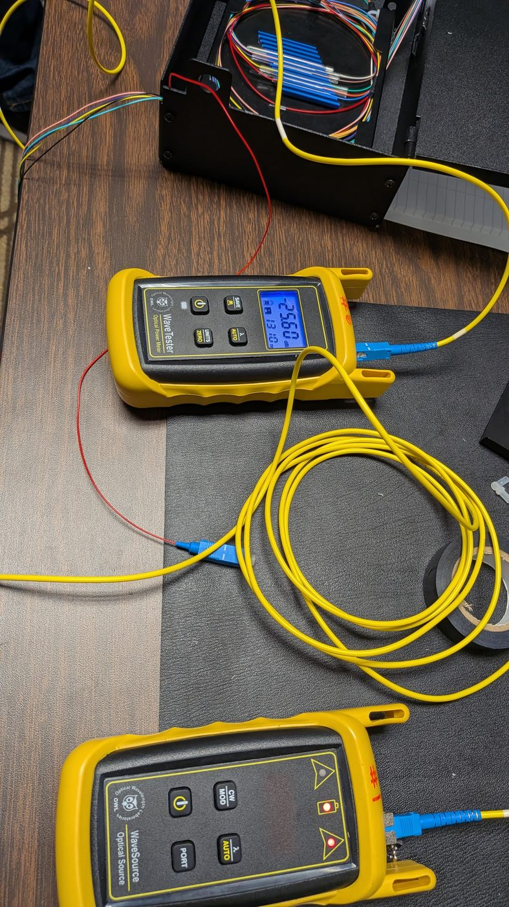
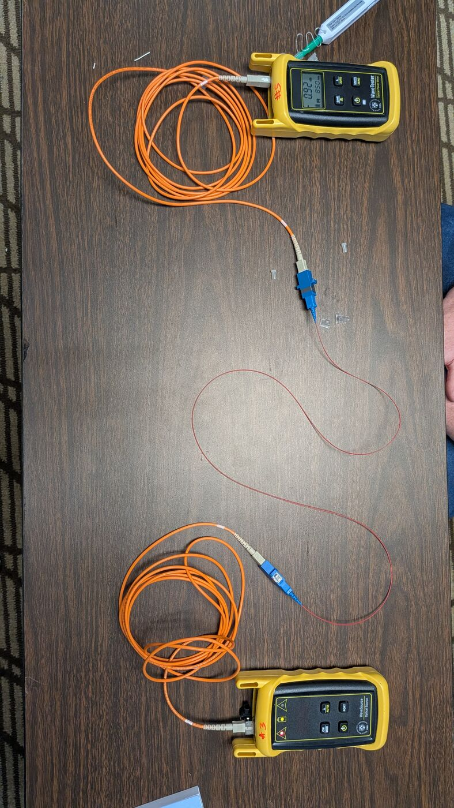

![Per Scholas logo.]()
UCI 2107.1 · Low Voltage Fiber Technician · Module 528 — Fiber Optics Systems
Lesson 528.3 — Fiber LAN Build, Troubleshooting, and Network Integration
Plan, build, test, activate, troubleshoot, and document a compatible fiber LAN path.
Complete this lesson before supervised installation and integration. The approved work order, equipment documents, lab specification, and acceptance sources control the hands-on work.
Estimated completion time: 60–75 minutes, including the formative activities. Your reading and technology needs may change the time required.
How the lesson is organized
- Plan the Build. Convert requirements into a compatible BOM and route.
- Install and Terminate. Place, protect, identify, and finish the cable.
- Test and Troubleshoot. Produce valid passive-link evidence.
- Integrate Active Equipment. Match and activate the optical interfaces.
- Verify and Handover. Separate claims and preserve evidence.
- Wrapping Up. Review the complete chain.
How this page works
Use the contents list or Previous and Next. Complete the visible activity to continue. Wrong answers provide feedback and do not block progress.
Accessibility
Use the skip link to move to the lesson. All controls are keyboard operable, and status changes are announced.
Lesson 528.3 · Section 1 Plan the Build
528.3.1 Translate the work order into a build plan
- Plan a compatible 12-fiber multimode local area network run.
- Construct the passive fiber path within approved routing, termination, splicing, enclosure, polarity, and labeling requirements.
- Inspect every fiber connection before mating.
- Clean every fiber connection when required.
- Test the completed passive link against the approved loss budget.
- Troubleshoot injected faults using controlled evidence.
- Select compatible optical transceivers for the fiber, distance, interface, and host equipment.
- Install selected transceivers and patch cords safely.
- Verify 1-gigabit-per-second interface state and end-to-end reachability.
- Document the as-built installation and test evidence.
Plan the complete signal path before selecting or installing a component.
Identify the endpoints, route, environment, fiber count and type, connector or splice plan, polarity method, equipment interfaces, wavelengths, supported Ethernet application, labeling scheme, test requirements, records, and handoff criteria. Mark every transition between outside plant, entrance facility, backbone, telecommunications room, and equipment connection.
Optical Multimode (OM) designations identify standardized multimode-fiber categories. OM1 uses a nominal 62.5/125 micrometer core/cladding size, while OM3 uses 50/125 micrometers. They are not interchangeable parts of one acceptance-test path.
Compare the plan with the actual cable, pigtails, connectors, adapters, panels, splice trays, test cords, transceivers, and instruments. Resolve mismatches before installation. A mechanically compatible component can still create a core-size, polish, polarity, wavelength, or performance mismatch.
For the supervised build described by the job task, the planned medium is a 12-fiber OM1 multimode distribution cable. The termination plan uses Subscriber Connector (SC) and Straight Tip (ST) connector interfaces. Assign all 12 fiber positions before cable preparation, even if only one duplex pair will be activated initially. Reserve pairs must remain identifiable, protected, and testable.

Do not build or certify a path that combines OM1 62.5/125 micrometer cable with OM3 50/125 micrometer patch or test cords. Use compatible OM1 components throughout, or redesign the complete link as OM3 and update every affected component, budget, and test requirement.
Check Your Understanding
The planned cable is OM1, but the supplied launch cords are OM3. What is the correct action?
Lesson 528.3 · Section 1 Plan the Build
528.3.2 Create a task-level bill of materials
A usable bill of materials ties every component to a specific task and interface.
For each endpoint, list the cable, enclosure, panel, adapter, pigtail or field connector, splice method, protection, patch cord, transceiver, and labeling material. For each tool, list the approved manufacturer and model, accessories, settings, consumables, manual, Safety Data Sheet (SDS) where applicable, calibration requirement, and inspection status.
Do not begin when the work package fails to identify a compatible termination path, chemical system, test interface, or required assembly tool. Record the missing requirement and obtain an approved selection before preparing the cable.
Stage the bill of materials in signal-path order: cable, termination or splice, adapter panel, patch cord, optical module, and network port. Then stage the associated preparation, inspection, cleaning, termination, and test tools. This sequence makes a missing adapter, polish mismatch, or unsupported interface visible before irreversible work begins.

| Task | Required match |
|---|---|
| Cable preparation | Cable construction, opening tool, fiber holders, stripper, cleaver |
| Termination | Fiber and buffer size, connector, adapter, polish, retention, kit, chemicals |
| Splicing | Fiber type, splice system, assembly tool or splicer program, sleeve, tray |
| Testing | Fiber type, connector interfaces, launch/receive cords, wavelengths, reference method |
| Activation | Transceiver interface, fiber, wavelength, reach, power window, polarity |
Check Your Understanding
The work package does not identify a compatible connector kit. What should happen?
Lesson 528.3 · Section 1 Plan the Build
528.3.3 Pathway, support, and installation limits
The cable datasheet, pathway rating, drawings, project specification, and applicable code control installation.
Survey the route for capacity, accessibility, sharp edges, water exposure, heat, electromagnetic or physical hazards, fire-rated boundaries, and required transitions. Confirm the cable listing for each environment. Armor alone does not establish direct-burial, wet-location, riser, or plenum suitability.
Use the cable manufacturer’s support-spacing limit, the pathway-system rating, project drawings, and applicable code. A spacing of 1.2 to 1.5 meters may be used only when it is explicitly stated in the lab specification and consistent with the installed products.
Use the manufacturer and project minimum bend radius and maximum pulling tension. Values such as 20 times the cable diameter during pulling and 10 times after installation may be used only when the current standard, product datasheet, and project specification permit them. Use a swivel, pulling eye, lubricant, and communication method where the approved plan requires them.
Check Your Understanding
What determines cable support spacing for an actual installation?
Lesson 528.3 · Section 2 Install and Terminate
528.3.4 Pull, place, and protect the cable
Control tension, bend, twist, identification, and firestopping throughout the route.
Inspect and prepare the route before pulling. Establish roles, communications, stop signals, pulling direction, tension control, and intermediate-feed points. Protect cable at edges and transitions. Apply pulling force only through the manufacturer-approved member or grip, not through connectors or exposed fibers.
Monitor tension and bend radius during the pull. Do not jerk the cable, exceed sidewall pressure limits, drag it over contaminants, or allow uncontrolled twisting. Preserve service loops only where the plan provides a protected storage location and permitted radius.
After placement, inspect the jacket and route, secure the cable without deformation, seal penetrations with the approved system, and transfer identification before removing any marked jacket. Record damage or excessive force; do not conceal it behind an enclosure.
Place the cable-placement controls in order.
Lesson 528.3 · Section 2 Install and Terminate
528.3.5 Prepare the enclosure and fiber
The enclosure must manage entry, strength, bend, identification, and service access.
Mount the enclosure in the approved orientation and maintain working clearance. Use the correct entry hardware, bushings, glands, and strain relief. Bond or ground metallic cable members and enclosures where required by the applicable code and design.
Open the cable using its manufacturer instructions. Preserve the required strength member, buffer tubes, subunits, and slack. Confirm the fiber-count sequence before assigning tray positions. Route fibers in smooth paths and keep bare, coated, buffered, and jacketed bend limits distinct.
Select pigtail splicing or field termination from the approved design. Do not use a single-mode connector kit for an OM1 termination merely because the connector shape appears compatible. Verify fiber, ferrule, polish, buffer, adapter, and tool compatibility.


Check Your Understanding
The available Subscriber Connector/Ultra Physical Contact (SC/UPC) connector kit is specified for single-mode fiber, while the planned cable is OM1. What should happen?
Lesson 528.3 · Section 2 Install and Terminate
528.3.6 Manage polarity and identification
Polarity is a planned end-to-end relationship, not a last-minute patching guess.
For a duplex link, the transmitter at one end must reach the receiver at the other. Document the fiber positions and equipment ports at both ends. Preserve the pair through panels, cassettes, patch cords, and equipment. Test polarity before activation.
For Multi-fiber Push On (MPO) systems, qualify every label: MPO polarity Method A, B, or C. Those labels describe array-cabling polarity arrangements and are unrelated to historical Optical Loss Test Set (OLTS) reference Method A/B/C terminology. Identify trunk keying, pinned and unpinned interfaces, cassette behavior, and patch-cord orientation as one system.
Do not reverse fibers without updating the records and confirming that the change follows the approved method. An undocumented local fix creates the next fault.
Use note: Treat this as one illustrative arrangement. The approved polarity plan and actual components control the build.
Text description of this diagram
Two panels illustrate one duplex polarity arrangement. The acceptable path connects each transmitter to the receiver at the opposite end. The unacceptable path connects like positions and leaves transmitter-to-transmitter and receiver-to-receiver paths.
Check Your Understanding
What does “Method B” mean without a domain label?
Lesson 528.3 · Section 2 Install and Terminate
528.3.7 Labels and as-built records
A label must remain legible, accurate, and connected to the system record.
Use the identifier scheme required by the project and applicable administration standard. Coordinate cable, fiber, panel, port, enclosure, pathway, and equipment identifiers so that each endpoint can be traced. Verify labels against the work order before applying them.
Use permanent machine-printed labels when the governing specification requires them. Choose material and adhesive for the surface and environment, apply to a clean location, and keep text readable after doors and covers are closed. A temporary handwritten label may support an emergency or controlled interim state only when the procedure allows it and the permanent replacement is tracked.
Update the as-built route, label schedule, splice plan, port map, component record, and test-file references. A correct label on an incorrect drawing is not a completed record.

Use note: This is an example structure, not a universal naming rule. Use the project-approved administration scheme.
Text description of this diagram
An example breaks identifiers into location, panel, port, endpoint, and cable fields. A sample schedule then maps fiber positions and colors to near-end and far-end identifiers. The layout illustrates traceability rather than prescribing project names.
Check Your Understanding
When is a permanent machine-printed label required?
Lesson 528.3 · Section 3 Test and Troubleshoot
528.3.8 Test the completed passive link
Test identity, polarity, length, insertion loss, and event detail as required by the work package.
Inspect and clean all test and link interfaces. Confirm compatible launch and receive cords, wavelengths, reference method, encircled-flux control where required, direction requirements, and acceptance budget. Test each scheduled fiber and preserve the result under its correct identifier.
Use OLTS evidence for end-to-end insertion-loss acceptance. Use OTDR evidence when required for event location or Tier 2 documentation. Record each required direction. Do not average OLTS directions for pass/fail unless the governing specification explicitly defines that method.
A loss budget is the maximum total insertion loss permitted for the planned link under the governing design. Build it before testing by adding the approved allowances for fiber length, mated connector pairs, splices, and any other permitted passive elements. A design allowance is the amount reserved in that calculation for an element; it is not a goal for workmanship. A workmanship target is the organization’s expected result for a properly installed component and may be tighter than the maximum allowance.
Assume the approved lab specification allows 3.5 dB/km for 0.025 km of fiber, 0.75 dB for each of two mated connector pairs, and 0.30 dB for each of two splices. The calculated maximum is (0.025 × 3.5) + (2 × 0.75) + (2 × 0.30) = 2.19 dB after rounding. A connector measuring 0.74 dB is below the example allowance, but that does not automatically make it acceptable workmanship; apply the approved workmanship target and inspection criteria. The values in this example must not replace the current lab specification.
The complete OM1 or OM3 design must be resolved before any acceptance answer can be keyed. A budget or test result based on mixed 62.5/125 and 50/125 micrometer components is not a defensible lab result.
For a 12-fiber cable, build a result matrix before testing. Each row should identify one fiber position and color; each required wavelength and direction should have its own result field. Compare every recorded value with the approved limit for that link. A passing duplex pair does not establish that the remaining ten fibers pass.

Check Your Understanding
An OLTS result passes, but polarity is reversed. Is the passive link complete?
Lesson 528.3 · Section 3 Test and Troubleshoot
528.3.9 Diagnose the injected or field fault
Follow a repeatable order that protects good evidence.
Define the symptom and affected scope. Confirm the job record, endpoints, expected fiber and interface, and whether the fault is passive, active, or unknown. Inspect simple physical conditions—power, seating, labels, polarity, caps, and visible damage—without randomly remating every interface.
Validate the test reference and cords before condemning the installed link. Compare wavelengths and directions. Use a Visual Fault Locator (VFL) for suitable nearby continuity or leakage questions, OLTS for quantitative end-to-end loss, and OTDR for event location. Change one variable at a time.
| Symptom | Confirm first | Next evidence |
|---|---|---|
| No continuity | Correct endpoints, polarity, seating, visible damage | VFL where safe and suitable, then OTDR if location is needed |
| High loss both directions | Reference, test cords, cleanliness, component compatibility | OLTS repeat, inspection, then event location |
| High loss mainly at longer wavelength | Bend condition and test validity | Inspect route and compare controlled wavelength results |
| Unexpected reflective event | Known connector/splice layout and OTDR settings | Trace review from both ends where required |
| Passive link passes; active link down | Transceiver compatibility, polarity, configuration, power | Device diagnostics and measured power window |
Check Your Understanding
Why should a technician change one variable at a time?
Lesson 528.3 · Section 3 Test and Troubleshoot
528.3.10 Close out the passive plant
A technically passing link is not complete until it is protected, documented, and usable by the next person.
Verify enclosure routing, caps, strain relief, bend radius, splice protection, labels, bonding, covers, and housekeeping. Confirm that every fiber and test file maps to the approved schedule. Record unused fibers and their protected condition.
Package the work order, approved deviation records, as-built route, port and splice maps, label schedule, component identities, OLTS results, OTDR files where required, inspection records, and unresolved issues. State the standards and project documents used for acceptance.
Handover must distinguish accepted work, deferred work, limitations, and required escalation. Never convert “not tested” into “passed” or leave the next technician to recreate missing evidence.
Check Your Understanding
Which statement is acceptable in a handover?
Lesson 528.3 · Section 4 Integrate Active Equipment
528.3.11 Treat the transceiver as a specification
A form factor is a mechanical package, not a complete optical identity.
Small Form-factor Pluggable (SFP), enhanced Small Form-factor Pluggable (SFP+), and Quad Small Form-factor Pluggable (QSFP) families describe form factors and electrical host interfaces. They do not uniquely identify Ethernet type, wavelength, reach, lane count, connector, fiber type, transmitter power, receiver sensitivity, or overload level. Read the complete module label and manufacturer datasheet.
Match modules at both ends for the intended standard and lane behavior. Confirm the network device supports the module and software. Verify fiber type, connector, polish, wavelength, reach, polarity, and the complete optical power window.
The approved build specification identifies a Cisco Catalyst 3750 with SFP uplinks for the 1-gigabit-per-second build. The Catalyst 3750 family includes different chassis and uplink configurations, so record the exact switch model and supported port type before selecting a module. Do not place an SFP+ 10-gigabit module into an SFP-only port or assume that a family name proves module support.
For 1000BASE-LX over installed multimode fiber, verify transceiver and vendor requirements. Use the specified mode-conditioning patch cord where required; do not substitute a standard duplex patch cord.
| Interface | Nominal wavelength and fiber | Selection control |
|---|---|---|
| 1000BASE-SX | 850 nm over multimode fiber | Match the installed multimode grade, supported reach, connector, and module power specifications. |
| 1000BASE-LX | 1310 nm, normally over single-mode fiber; some implementations support multimode | For legacy multimode, use the specified mode-conditioning patch cord where required. |
| 10GBASE-SR | 850 nm over multimode fiber | Match the OM grade and supported reach; do not infer support from an SFP-shaped module. |
Check Your Understanding
Two modules are both SFP. Does that make them link-compatible?
Lesson 528.3 · Section 4 Integrate Active Equipment
528.3.12 Check the optical power window
A receiver can fail from too little power or too much power.
Use the actual transceiver datasheets. Determine the applicable transmitter power range, receiver minimum, receiver maximum or overload level, supported fiber and wavelength, and any required attenuation. Account for the complete path loss and uncertainty.
A decibel (dB) expresses a power ratio or gain/loss difference. A decibel-milliwatt (dBm) expresses an absolute optical power level referenced to one milliwatt. Subtract a loss stated in dB from a transmit level stated in dBm to predict a receive level in dBm; do not label the result in dB.
Predicted received power (dBm) = transmit power (dBm) − total path loss (dB).
Lower-limit margin (dB) = predicted received power − receiver minimum.
Overload margin (dB) = receiver maximum − predicted received power.
Both margins must satisfy the approved design. If predicted or measured power exceeds the maximum receiver input, use only an approved attenuator and verify the resulting power at the applicable wavelengths. Do not add attenuation merely because a link is short.
If the predicted receive level is −5 dBm, the receiver minimum is −17 dBm, and the maximum input is −3 dBm, the lower-limit margin is 12 dB and the overload margin is 2 dB. The example is acceptable only if the approved design requires no greater margin. These numbers illustrate the calculation; they are not universal transceiver limits.
Check Your Understanding
Transmit power is −2 dBm and path loss is 3 dB. What is predicted received power?
Lesson 528.3 · Section 4 Integrate Active Equipment
528.3.13 Insert, patch, and verify safely
Protect eyes, end faces, device ports, and polarity while activating the link.
Follow the device and transceiver handling instructions, including electrostatic-discharge controls. Confirm the correct module and port before insertion. Keep optical ports capped until the controlled inspection and cleaning step. Never look into a transceiver or fiber end.
Inspect and clean both sides of each patch connection as required. Verify that transmit maps to receive and that patch cords match fiber type, connector, and polish. Support cords without tension, pinching, or bend violations.

After activation, record module identity and port, interface state, negotiated or configured speed, and diagnostic optical levels when supported. A link-state indicator is evidence, not a substitute for the acceptance record.
Use note: Verify the actual module ports, patch-cord orientation, panel mapping, and approved polarity plan before activation.
Text description of this diagram
Two panels compare equipment-end patching. The acceptable example carries each transmitter to the far receiver. The unacceptable example reverses the local orientation and prevents the transmit and receive paths from meeting correctly.
Place the activation sequence in order.
Lesson 528.3 · Section 5 Verify and Handover
528.3.14 Separate passive, optical, and network evidence
“The fiber passed” and “the service works” are different claims.
A passive cabling result establishes only the items measured under its test plan. A device link indicator establishes physical-interface state as interpreted by the equipment. Digital optical monitoring reports module estimates whose accuracy and calibration limits come from the vendor. A ping tests selected network-layer reachability, not cabling compliance or complete application performance.
Before the network check, confirm the expected port identifiers, interface configuration, speed, duplex or autonegotiation behavior, and Internet Protocol (IP) addressing supplied by the lab plan. A successful ping shows that selected endpoints exchanged IP echo traffic at that time. A traceroute attempts to reveal the routed hops toward a destination; it may be incomplete when a device filters or deprioritizes its probe traffic. Neither command replaces passive-link acceptance or sustained traffic testing.
If installed cabling exceeds its specified acceptance limit while the active link is currently up, reject or remediate the installation. The link has less documented margin. Current operation does not prove compliance or predict exactly when errors will occur.
| Evidence | Supported claim | Does not prove |
|---|---|---|
| OLTS pass | Specified end-to-end loss criterion met under the recorded method | Active configuration or application operation |
| OTDR trace | Recorded event behavior and distance under stated settings | Automatic Tier 1 acceptance |
| Link up/up | Physical interface is operational at that moment | Cabling compliance or error-free service |
| Digital optical level | Module-reported receive/transmit estimate | Independent calibrated acceptance result |
| Ping reply | Selected IP path responded | Complete network or application health |
Check Your Understanding
The active link is up, but OLTS loss exceeds the specified cabling limit. What is the correct disposition?
Lesson 528.3 · Section 5 Verify and Handover
528.3.15 Troubleshoot “link down” in a controlled order
Move from scope and compatibility to physical path, power, configuration, and escalation.
Confirm the affected endpoints, ports, and expected service. Check device power, administrative state, alarms, and whether the modules are recognized. Verify module compatibility at both ends, including Ethernet interface, wavelength, fiber, reach, lane behavior, and vendor support.
Verify seating, connector condition, patch path, and transmit-to-receive polarity. Compare measured or module-reported optical power with both receiver limits while respecting the accuracy of each source. Confirm the passive link record and investigate any changed condition.
Then check speed, duplex or autonegotiation requirements, port configuration, and network settings. Escalate with evidence when a device, software, design, or upstream network issue lies outside the technician’s authority.
For the specified 1-gigabit-per-second link, record both ends rather than relying on one status light. Confirm that the intended uplink ports are operational at the required rate, then run the approved ping and traceroute checks from the stated endpoints. If addressing, routing, access control, or switch configuration is not supplied, record the missing prerequisite instead of inventing values.
Check Your Understanding
A passive link passed, but the active link remains down. Which check is still required?
Lesson 528.3 · Section 5 Verify and Handover
528.3.16 Troubleshoot “link up but erroring”
Intermittent or erroring service requires time-correlated evidence.
Record the error counters, timestamps, traffic conditions, interface state changes, alarms, and optical diagnostics. Check connectors for contamination or instability, cords for bend or strain, modules for temperature or support issues, and the passive test record for marginal results.
Do not assume every error is optical. Check speed, duplex, autonegotiation, forward-error-correction requirements where applicable, software, congestion, and upstream faults. Change one factor at a time and clear or snapshot counters according to the diagnostic plan.
Correlate a corrective action with the observed change. “Reseated everything and it improved” is weak evidence because the responsible interface is unknown and contamination may have moved.
Check Your Understanding
Why should counters and timestamps be captured before making changes?
Lesson 528.3 · Section 5 Verify and Handover
528.3.17 Complete the integrated handover
The final record connects the installed plant, active interface, observed service, and remaining responsibility.
Identify the cable, fibers, endpoints, panels and ports, polarity, labels, connector and splice types, transceivers, test equipment, test files, acceptance documents, optical levels, device state, and network verification performed. Record approved deviations and unresolved issues with an owner and next action.
State each conclusion at the level supported by evidence: passive cabling accepted; optical power within the documented window; interface operational; selected network reachability verified. Do not expand one result into a broader promise.
Leave the enclosure and equipment usable: fibers routed and protected, caps installed, patch cords supported, labels visible, doors secure, debris removed, and records accessible to the next authorized person.
Check Your Understanding
Which handover wording is most defensible?
Lesson 528.3 · Section 6 Wrapping Up
528.3.18 What you covered
Use the complete evidence chain from work order through handover.
- Use a compatible fiber system and a complete task-level bill of materials before work begins.
- Apply product, project, pathway, code, tension, bend, and support requirements during installation.
- Identify MPO polarity methods separately from historical OLTS reference labels.
- Accept the passive link only through valid tests against the governing specification.
- Match transceivers by the complete interface and power specification, not form factor alone.
- Separate passive, optical, link-state, and network evidence in troubleshooting and handover.
These activities are formative and unrecorded. They do not replace supervised installation, an approved lab specification, or a performance rubric.